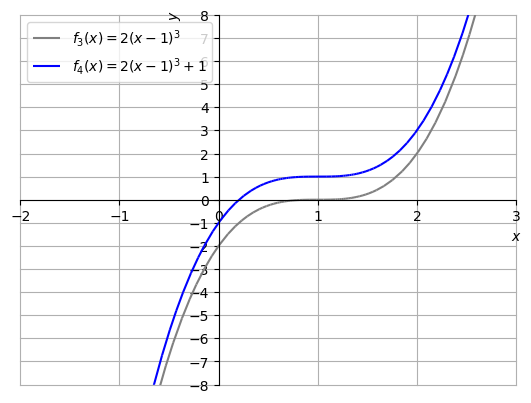

1.7 Operações com funções
1.7.1 Somas, diferenças, produtos e quocientes
Sejam dadas as funções e com domínio em comum . Então, definimos as funções
-
•
para todo ;
-
•
para todo ;
-
•
para todo tal que .
Exemplo 1.7.1.
Sejam e . Temos:
-
•
e está definida em toda parte.
-
•
e está definida em toda parte.
-
•
e está definida em toda parte.
-
•
e tem domínio 2323 23 Observemos que não podemos simplificar o , pois a função é diferente da função ..
1.7.2 Funções compostas
Sejam dadas as funções e . Definimos a função composta de com por
| (1.81) |
Seu domínio consiste dos valores de que pertençam ao domínio da e tal que pertença ao domínio da .
Exemplo 1.7.2.
Sejam e . A função composta .
1.7.3 Translações, contrações, dilatações e reflexões de gráficos
Algumas operações com funções produzem resultados bastante característico no gráfico de funções. Com isso, podemos usar estas operações para construir gráficos de funções mais complicadas a partir de funções básicas.
1.7.4 Translações
Dada uma função e uma constante , temos que a o gráfico de é uma translação vertical do gráfico de . Se , observamos uma translação vertical para cima. Se , observamos uma translação vertical para baixo.
Exemplo 1.7.3.
Seja . A Figura 1.23, contém os esboços dos gráficos de e para .

O seguinte código Python2424
24
Veja a Observação 1.0.1., faz os esboços dos gráficos de e :
k = 1
f = lambda x: x**2
p = plot(f(x),(x,-2,2),line_color="gray",show=False)
q = plot(f(x)+k,(x,-2,2),line_color="blue",show=False)
p.extend(q)
p.title = ("$k = %1.1f$" % k)
p.xlabel = ’$x$’
p.ylabel = ’$y$’
p[0].label = "$f(x) = x^2$"
p[1].label = "$f(x)+k$"
p.save(’fig.png’)
fig = p._backend.fig
ax = fig.axes[0]
ax.grid()
ax.legend(loc="upper right")
fig.savefig(’fig.png’, bbox_inches=’tight’)
Podemos alterar o valor de e a função para vermos o efeito das translações verticais.
Translações horizontais de gráficos podem ser produzidas pela soma de uma constante não nula ao argumento da função. Mais precisamente, dada uma função e uma constante , temos que o gráfico de é uma translação horizontal do gráfico de em unidades. Se , observamos uma translação horizontal para a esquerda. Se , observamos uma translação horizontal para a direita.
Exemplo 1.7.4.
Seja . A Figura 1.24, contém os esboços dos gráficos de e para .

O seguinte código Python2525
25
Veja a Observação 1.0.1., faz os esboços dos gráficos de e :
k = 1
f = lambda x: x**2
p = plot(f(x),(x,-3,3),line_color="gray",show=False)
q = plot(f(x+k),(x,-3,3),line_color="blue",show=False)
p.extend(q)
p.title = ("$k = %1.1f$" % k)
p.xlabel = ’$x$’
p.ylabel = ’$y$’
p[0].label = "$f(x) = x^2$"
p[1].label = "$f(x+k)$"
p.save(’fig.png’)
fig = p._backend.fig
ax = fig.axes[0]
ax.grid()
ax.legend(loc="upper right")
fig.savefig(’fig.png’, bbox_inches=’tight’)
Podemos alterar o valor de e a função para vermos o efeito das translações horizontais.
1.7.5 Dilatações e contrações
Sejam dados uma função e uma constante . Então, o gráfico de:
-
•
é uma dilatação vertical do gráfico de , quando ;
-
•
é uma contração vertical do gráfico de , quando ;
-
•
é uma contração horizontal do gráfico de , quando ;
-
•
é uma dilatação horizontal do gráfico de , quando .
Exemplo 1.7.5.
Seja . A Figura 1.25, contém os esboços dos gráficos de e para .
O seguinte código Python2626
26
Veja a Observação 1.0.1., faz os esboços dos gráficos de e :
alpha = 2
f = lambda x: x**2
p = plot(f(x),(x,-2,2),line_color="gray",show=False)
q = plot(alpha*f(x),(x,-2,2),line_color="blue",show=False)
p.extend(q)
p.title = ("$\\alpha = %1.1f$" % alpha)
p.xlabel = ’$x$’
p.ylabel = ’$y$’
p[0].label = "$f(x) = x^2$"
p[1].label = "$\\alpha\\cdot f(x)$"
p.save(’fig_ex_dilavert.png’)
fig = p._backend.fig
ax = fig.axes[0]
ax.grid()
ax.legend(loc="upper right")
fig.savefig(’fig_ex_dilavert.png’, bbox_inches=’tight’)
Podemos alterar o valor de alpha e a função f para vermos o efeito das dilatações/contrações verticais.
Exemplo 1.7.6.
Seja . A Figura 1.26, contém os esboços dos gráficos de e para .

O seguinte código Python2727
27
Veja a Observação 1.0.1., faz os esboços dos gráficos de e :
alpha = 0.5
f = lambda x: x**2-2*x+1
p = plot(f(x),(x,-2,4),line_color="gray",show=False)
q = plot(f(alpha*x),(x,-2,4),line_color="blue",show=False)
p.extend(q)
p.title = ("$\\alpha = %1.1f$" % alpha)
p.xlabel = ’$x$’
p.ylabel = ’$y$’
p[0].label = "$f(x) = x^3$"
p[1].label = "$f(\\alpha\\cdot x)$"
p.save(’fig_ex_dilahoriz.png’)
fig = p._backend.fig
ax = fig.axes[0]
ax.grid()
ax.set_yticks(range(0,9))
ax.legend(loc="upper right")
fig.savefig(’fig_ex_dilahoriz.png’, bbox_inches=’tight’)
Podemos alterar o valor de alpha e a função f para vermos o efeito das dilatações/contrações horizontais.
1.7.6 Reflexões
Seja dada uma função . O gráfico da função é uma reflexão em torno do eixo das abscissas do gráfico da função . Já, o gráfico da função é uma reflexão em torno do eixo das ordenadas do gráfico da função .
Exemplo 1.7.7.
Seja . A Figura 1.28, contém os esboços dos gráficos de e .

O seguinte código Python2828
28
Veja a Observação 1.0.1., faz os esboços dos gráficos de e :
f = lambda x: x**2-2*x+2 p = plot(f(x),(x,-1,3),line_color="gray",show=False) q = plot(-f(x),(x,-1,3),line_color="blue",show=False) p.extend(q) p.xlabel = ’$x$’ p.ylabel = ’$y$’ p[0].label = "$f(x) = x^2-2x+2$" p[1].label = "$-f(x)$" p.save(’fig_ex_reflex.png’) fig = p._backend.fig ax = fig.axes[0] ax.grid() ax.set_yticks(range(-5,6)) ax.legend(loc="upper right") fig.savefig(’fig_ex_reflex.png’, bbox_inches=’tight’)
Podemos alterar a função f para vermos o efeito das reflexões em torno de eixo das abscissas.
Exemplo 1.7.8.
Seja . A Figura LABEL:fig:ex_refley, contém os esboços dos gráficos de e .

O seguinte código Python2929
29
Veja a Observação 1.0.1., faz os esboços dos gráficos de e :
f = lambda x: x**2-2*x+2 p = plot(f(x),(x,-1,3),line_color="gray",show=False) q = plot(f(-x),(x,-3,1),line_color="blue",show=False) p.extend(q) q = plot(-1,(x,-3,3),line_color="none",show=False) p.extend(q) p.xlabel = ’$x$’ p.ylabel = ’$y$’ p[0].label = "$f(x) = x^2-2x+2$" p[1].label = "$f(-x)$" p[2].label = "" p.save(’fig_ex_refley.png’) fig = p._backend.fig ax = fig.axes[0] ax.grid() ax.set_yticks(range(-1,6)) ax.legend(loc="upper right") fig.savefig(’fig_ex_refley.png’, bbox_inches=’tight’)
Podemos alterar a função f para vermos o efeito das reflexões em torno de eixo das ordenadas.
Exercícios resolvidos
ER 1.7.1.
Sejam
| (1.82) |
Determine a função composta e seu domínio.
Solução.
Começamos determinando a função composta
| (1.83) | ||||
| (1.84) | ||||
| (1.85) | ||||
| (1.86) | ||||
| (1.87) |
Agora, observamos que está definida em toda parte e tem imagem . Como o domínio da é , temos que está definida em toda parte.
ER 1.7.2.
Faça o esboço do gráfico de .
Solução.
Começamos trançando o gráfico de . Então, obtemos o gráfico de por translação de uma unidade à direita. O gráfico de é obtido por dilatação vertical de 2 vezes. Por fim, o gráfico de é obtido por translação de uma unidade para cima. Veja a Figura 1.29.
 |
 |
 |
Exercícios
E 1.7.1.
Sejam e . Determine a função e seu domínio.
Resp.
; domínio: .
E 1.7.2.
Faça um esboço do gráfico de .
Resp.
Dica: verifique sua resposta com um pacote de matemática simbólica, por exemplo, com o SymPy.
Colabore!
Este é um site gratuito de recursos educacionais abertos. Colabore informando erros ou dando sugestões.